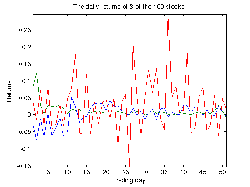
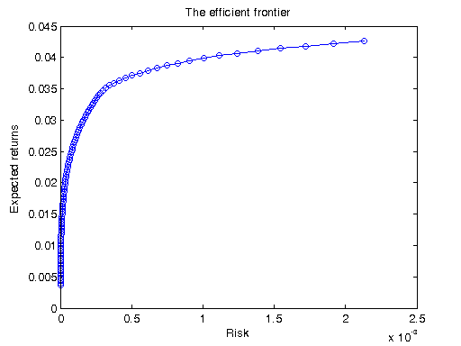

Distributed Portfolio Optimization
This demo uses the Parallel Computing Toolbox™ to perform a mean-variance portfolio optimization of a stock portfolio, and generates an efficient frontier. The portfolios on the frontier are optimal in the sense that they offer the minimal risk for some given level of expected return.
We are given the daily returns of a group of stocks over a fixed time period, and try to choose a portfolio such that it achieves some given return mu, and has minimal risk in the mean-variance sense. This leads us to solve a quadratic minimization problem with equality constraints. Solving this minimization problem for a range of values of mu gives us the efficient frontier.
For details about the computations, view the code for pctdemo_setup_optim.
Prerequisites:
Related demos:
Contents
Analyze the Sequential Problem
First, we look at how the computations in this demo fit into the model introduced in the Dividing MATLAB Computations into Tasks demo. The main computations consist of performing repeated optimizations using different values of the parameter in muVec. Each optimization takes a fairly short time, so we have each task perform many optimizations. Because the function pctdemo_task_optim is already vectorized, we can use it directly as our task function.
Load the Demo Settings and the Data
The demo uses the default configuration when identifying the scheduler to use. The configurations documentation explains how to create new configurations and how to change the default configuration. See Customizing the Settings for the Demos in the Parallel Computing Toolbox for instructions on how to change the demo difficulty level or the number of tasks created.
[difficulty, sched, numTasks] = pctdemo_helper_getDefaults();
The function pctdemo_setup_optim uses historical data about the stock returns to provide us with the mean and the covariance matrix of the stock returns. It also gives us the desired returns, muVec, for which we should find the minimal risk. The demo difficulty level controls the length of the vector muVec. Additionally, the function pctdemo_setup_optim displays for reference a graph of the daily returns of a few of the stocks in the portfolio. You can view the code for pctdemo_setup_optim for full details.
[fig, muVec, covMat, expRet ] = pctdemo_setup_optim(difficulty); startTime = clock;
Divide the Work into Smaller Tasks
We divide the vector muVec into numTasks segments. This effectively divides the parameter space into pieces that the tasks can work on.
[muSplit, numTasks] = pctdemo_helper_split_vector(muVec, numTasks); fprintf(['This demo will submit a job with %d task(s) ' ... 'to the scheduler.\n'], numTasks);
This demo will submit a job with 4 task(s) to the scheduler.
Create and Submit the Job
Let us create the optimization job and the tasks in the job. We let task i perform the optimization for all the values found in muSplit{i}. You can view the code for pctdemo_task_optim for full details.
job = createJob(sched); for i = 1:numTasks createTask(job, @pctdemo_task_optim, 2, ... {covMat, expRet, muSplit{i}}); end
We can now submit the job and wait for it to finish.
submit(job);
waitForState(job, 'finished');
Retrieve the Results
Let us obtain the job results, verify that all the tasks finished successfully and then destroy the job. We throw an error if we could not obtain any results, but display a warning if we got only some of the results.
jobResults = getAllOutputArguments(job); if isempty(jobResults) taskErrorMsgs = pctdemo_helper_getUniqueErrors(job); destroy(job); error('distcomp:demo:EmptyJobOutput', ... ['Could not obtain any job results. The following error(s) ' ... 'occurred \nduring task execution:\n\n%s'], ... taskErrorMsgs); end
We combine the results from the individual tasks into two vectors, the risks and the returns, and we verify that we obtained all the results that we were expecting.
risk = [jobResults{:, 1}];
ret = [jobResults{:, 2}];
numPorts = numel(muVec);
numOk = numel(risk);
if ~(numOk == numPorts)
taskErrorMsgs = pctdemo_helper_getUniqueErrors(job);
warning('distcomp:demo:IncompleteJobResults', ...
['Some tasks did not complete. Only obtained results for ' ...
'%d out of %d portfolios. ' ...
'\nThe following error(s) ' ...
'occurred during task execution:\n\n%s'], ...
numOk, numPorts, taskErrorMsgs);
end
We have now finished all the verifications, so we can destroy the job.
destroy(job);
Measure the Elapsed Time
The time used for the distributed computations should be compared against the time it takes to perform the same set of calculations in the Sequential Portfolio Optimization demo. The elapsed time varies with the underlying hardware and network infrastructure.
elapsedTime = etime(clock, startTime);
fprintf('Elapsed time is %2.1f seconds\n', elapsedTime);
Elapsed time is 42.9 seconds
Plot the Results
We use the pctdemo_plot_optim function to display a graph of the efficient frontier. You can view the code for pctdemo_plot_optim for full details.
pctdemo_plot_optim(fig, risk, ret);